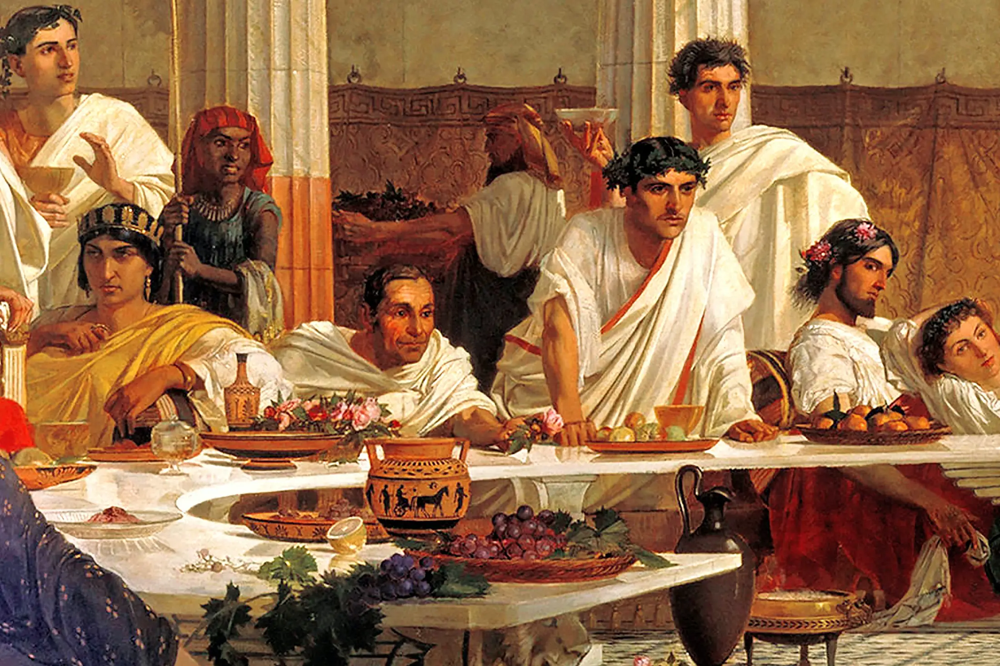

Om Oss
Välkommen till Restaurang SPQR, där vi bjuder på en autentisk smakresa genom det antika Rom med en modern twist. Våra passionerade kockar använder de finaste ingredienserna för att skapa rätter som hedrar det romerska kökets rika historia och samtidigt överraskar dina smaklökar.
SPQR står för "Senatus Populusque Romanus" - Senaten och det romerska folket - och det är i den andan vi vill skapa en restaurang för alla. Oavsett om du är en historiefantast eller bara älskar god mat, hoppas vi att du kommer att trivas hos oss. Vi strävar efter att erbjuda en upplevelse som är lika minnesvärd som Roms egen historia, med en atmosfär som är både elegant och inbjudande.
Vår meny är noggrant sammansatt för att representera det bästa av romersk matlagning, från klassiska pastarätter till innovativa tolkningar av traditionella recept. Vi är stolta över att använda lokala och säsongsbetonade ingredienser när det är möjligt, och vi arbetar nära våra leverantörer för att säkerställa att varje rätt är av högsta kvalitet.
På Restaurang SPQR är vi mer än bara en restaurang - vi är en plats för att fira mat, kultur och gemenskap. Vi ser fram emot att välkomna dig till bords!